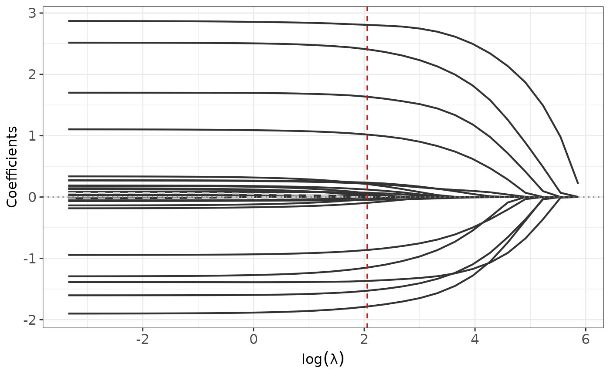

Fits the induced smoothed lasso (or elastic net) over a grid of values of the tuning parameter, with warm starts.
Usage
islasso.path(
formula,
family = gaussian(),
lambda = NULL,
nlambda = 100,
lambda.min.ratio = ifelse(nobs < nvars, 0.01, 1e-04),
alpha = 1,
data,
weights,
subset,
offset,
contrasts = NULL,
unpenalized,
control = is.control()
)
islasso.path.fit(
X,
y,
family = gaussian(),
lambda = NULL,
nlambda = 100,
lambda.min.ratio = ifelse(NROW(X) < NCOL(X), 0.01, 1e-04),
alpha = 1,
intercept = FALSE,
weights = NULL,
offset = NULL,
unpenalized = NULL,
control = is.control()
)Arguments
- formula
a symbolic description of the model (see
stats::formula()).- family
the error distribution and link function: a family object, a family function or its name. Any family accepted by
stats::glm()can be used, for instancegaussian(),binomial()(links logit, probit, cauchit, log, cloglog),poisson(),Gamma(),inverse.gaussian(), thequasi*families andMASS::negative.binomial()with knowntheta.- lambda
optional vector of values of the tuning parameter; by default a sequence of
nlambdavalues, log-equispaced betweenlambda.min.ratio * lambda.maxandlambda.max, the smallest value giving (practically) null penalized coefficients.- nlambda
number of values of
lambda(default 100).- lambda.min.ratio
ratio between the smallest and the largest value of
lambda; default1e-2if the number of observations is smaller than the number of covariates and1e-4otherwise.- alpha
the elastic-net mixing parameter, \(0 \le \alpha \le 1\):
alpha = 1is the lasso,alpha = 0the ridge penalty.- data
an optional data frame containing the variables in the model.
- weights
optional vector of prior weights.
- subset
an optional vector specifying a subset of observations.
- offset
an optional offset in the linear predictor.
- contrasts
an optional list of contrasts for the factors (see
stats::model.matrix()).- unpenalized
names or indices (with respect to the columns of the model matrix without intercept) of the coefficients left unpenalized. The intercept is never penalized.
- control
a list of control parameters, see
is.control().- X, y
for
islasso.fit(): the model matrix (without the column of ones) and the response.- intercept
for
islasso.fit(): logical, should an (unpenalized) intercept be included?
Value
An object of class "islasso.path", a list with components
- Coef, SE, Weight, Gradient
matrices (one row per value of
lambda, in increasing order) of estimates, standard errors, mixture weights and gradients of the smoothed estimating equation (a convergence diagnostic, numerically close to zero);- Score
matrix of standardized scores \(x_j^\top W(z - X\hat\beta)/\lambda_j\) (standardized covariates), equal at the solution to \(\alpha P_j + (1-\alpha)\hat\beta_j\): the induced-smoothing analogue of the lasso optimality conditions, in \([-1, 1]\) for the lasso (0 for unpenalized columns);
- Info
matrix with columns
lambda,df,phi,deviance,logLik,iter,err,conv;- GoF
matrix of information criteria (AIC, BIC, AICc, eBIC, GCV, GIC);
- Linear.predictors, Fitted.values, Residuals
matrices with one row per value of
lambda;- Input
list with
n,p,intercept,unpenalized;- call, family, prior.weights, y, offset, alpha, control, formula, model, terms, data, xlevels, contrasts
the inputs.
Details
Each model of the path is fitted as islasso() would do at the same value of lambda
(starting values from the glmnet path, standard errors started at their default
values), so that the path and a single fit agree; with the Gaussian family the matrix
\(X^\top W X\) is computed once for the whole path. The models are independent and can be
fitted in parallel with control = is.control(ncores = ) (socket cluster of the 'parallel'
package; worthwhile for large problems, since starting the workers takes about a second). Every model
is kept in the output, together with its convergence flag (column conv of Info), except
those for which the algorithm failed (a warning is given).
The information criteria stored in GoF are
\(AIC = -2\ell + 2\,df\), \(BIC = -2\ell + \log(n)\,df\),
\(AICc = AIC + 2\,df(df+1)/(n-df-1)\), \(eBIC = -2\ell + \{\log(n) + 2g\log(p)\}\,df\),
\(GCV = n\,D/(n-df)^2\) (with \(D\) the deviance) and \(GIC = -2\ell + \log\log(n)\log(p)\,df\),
where \(df\) is the effective number of parameters (sum of the pseudo hat values) and
\(-2\ell\) is replaced by the deviance when \(p \ge n\) or the family has no likelihood.
References
Cilluffo G., Sottile G., La Grutta S., Muggeo V.M.R. (2020). The induced smoothed lasso: a practical framework for hypothesis testing in high dimensional regression. Statistical Methods in Medical Research, 29(3), 765–777. doi:10.1177/0962280219842890
Author
Gianluca Sottile gianluca.sottile@unipa.it
Examples
n <- 100; p <- 30; p1 <- 10
beta.veri <- sort(round(c(seq(.5, 3, length.out = p1/2),
seq(-1, -2, length.out = p1/2)), 2))
beta <- c(beta.veri, rep(0, p - p1))
sim1 <- simulXy(n = n, p = p, beta = beta, seed = 1, family = gaussian())
o <- islasso.path(y ~ ., data = sim1$data, family = gaussian(), nlambda = 30L)
o
#>
#> Call:
#> islasso.path(formula = y ~ ., family = gaussian(), nlambda = 30L,
#> data = sim1$data)
#>
#> Coefficients:
#> lambda df phi deviance logLik
#> 1 0.0352 30.9792 1.4072 97.1265 -140.4361
#> 2 0.0483 30.9714 1.4071 97.1268 -140.4362
#> 3 0.0664 30.9606 1.4068 97.1274 -140.4365
#> 4 0.0912 30.9459 1.4066 97.1285 -140.4371
#> 5 0.1253 30.9256 1.4062 97.1305 -140.4381
#> 6 0.1721 30.8976 1.4057 97.1343 -140.4401
#> 7 0.2365 30.8590 1.4050 97.1415 -140.4438
#> 8 0.3249 30.8057 1.4041 97.1551 -140.4508
#> 9 0.4463 30.7320 1.4030 97.1805 -140.4639
#> 10 0.6132 30.6299 1.4016 97.2282 -140.4884
#> 11 0.8424 30.4881 1.4000 97.3172 -140.5341
#> 12 1.1573 29.4596 1.3818 97.4759 -140.6156
#> 13 1.5900 28.3235 1.3638 97.7558 -140.7590
#> 14 2.1843 28.0174 1.3651 98.2660 -141.0192
#> 15 3.0009 27.5710 1.3696 99.2012 -141.4928
#> 16 4.1227 27.5726 1.3929 100.8869 -142.3354
#> 17 5.6638 25.3328 1.3914 103.8955 -143.8046
#> 18 7.7811 22.3682 1.4025 108.8790 -146.1472
#> 19 10.6898 19.5204 1.4549 117.0896 -149.7823
#> 20 14.6859 17.5317 1.5802 130.3198 -155.1349
#> 21 20.1759 14.9652 1.7841 151.7127 -162.7348
#> 22 27.7181 13.3372 2.1776 188.7132 -173.6468
#> 23 38.0798 11.8942 2.8697 252.8411 -188.2734
#> 24 52.3149 10.8989 4.1390 368.7904 -207.1468
#> 25 71.8714 9.8073 6.3956 576.8399 -229.5136
#> 26 98.7387 8.2497 10.1337 929.7714 -253.3823
#> 27 135.6495 5.8787 15.3467 1444.4520 -275.4096
#> 28 186.3586 3.4268 21.6964 2095.2913 -294.0077
#> 29 256.0238 1.9581 27.3748 2683.8755 -306.3862
#> 30 351.7316 1.2685 32.0403 3163.3877 -314.6053
#>
summary(o, lambda = 10, pval = 0.05)
#>
#> Call:
#> islasso.path(formula = y ~ ., family = gaussian(), nlambda = 30L,
#> data = sim1$data)
#>
#> Residuals:
#> Min 1Q Median 3Q Max
#> -2.99634 -0.74982 -0.07189 0.68041 2.75679
#>
#> Estimate Std. Error z value Pr(>|z|)
#> X1 -1.7580 0.1272 -13.822 < 2e-16 ***
#> X2 -1.5046 0.1283 -11.726 < 2e-16 ***
#> X3 -1.3585 0.1298 -10.467 < 2e-16 ***
#> X4 -1.1149 0.1355 -8.225 < 2e-16 ***
#> X5 -0.8424 0.1272 -6.624 3.49e-11 ***
#> X7 0.9965 0.1287 7.740 9.95e-15 ***
#> X8 1.6100 0.1314 12.252 < 2e-16 ***
#> X9 2.3746 0.1326 17.914 < 2e-16 ***
#> X10 2.7976 0.1355 20.643 < 2e-16 ***
#> ---
#> Signif. codes: 0 ‘***’ 0.001 ‘**’ 0.01 ‘*’ 0.05 ‘.’ 0.1 ‘ ’ 1
#>
#> (Dispersion parameter for gaussian family taken to be 1.443894)
#>
#> Null deviance: 3311.24 on 99.00 degrees of freedom
#> Residual deviance: 115.37 on 79.88 degrees of freedom
#> AIC: 340.27
#> Lambda: 10
#>
#> Number of IS iterations: 59
#>
coef(o, lambda = 10)
#> (Intercept) X1 X2 X3 X4
#> 1.419430e-01 -1.757955e+00 -1.504564e+00 -1.358504e+00 -1.114872e+00
#> X5 X6 X7 X8 X9
#> -8.424487e-01 2.235673e-01 9.964834e-01 1.609988e+00 2.374570e+00
#> X10 X11 X12 X13 X14
#> 2.797643e+00 9.500268e-03 1.049838e-01 4.230080e-03 6.108787e-02
#> X15 X16 X17 X18 X19
#> 6.065997e-07 1.817863e-01 3.764460e-02 -7.667267e-02 7.606601e-07
#> X20 X21 X22 X23 X24
#> 2.480424e-07 -4.249394e-02 -4.296453e-07 1.815123e-03 3.977923e-03
#> X25 X26 X27 X28 X29
#> 2.506851e-02 -7.622107e-07 -1.527932e-03 2.052455e-01 4.716834e-07
#> X30
#> -2.132594e-02
GoF.islasso.path(o, plot = FALSE)$lambda.min
#> AIC BIC AICc eBIC GCV GIC
#> 7.781065 10.689812 10.689812 20.175863 7.781065 10.689812
# \donttest{
plot(o, yvar = "coefficients", gof = "AIC")

# Poisson
beta <- c(1, 1, 1, rep(0, p - 3))
sim3 <- simulXy(n = n, p = p, beta = beta, interc = 1, seed = 1, family = poisson())
o3 <- islasso.path(y ~ ., data = sim3$data, family = poisson(), nlambda = 30L)
temp <- GoF.islasso.path(o3, plot = FALSE)
summary(o3, pval = 0.05, lambda = temp$lambda.min["BIC"])
#>
#> Call:
#> islasso.path(formula = y ~ ., family = poisson(), nlambda = 30L,
#> data = sim3$data)
#>
#> Residuals:
#> Min 1Q Median 3Q Max
#> -6.2829 -1.3896 -0.5417 0.4254 18.7983
#>
#> Estimate Std. Error z value Pr(>|z|)
#> (Intercept) 1.31488 0.06124 21.47 <2e-16 ***
#> X1 0.85413 0.04056 21.06 <2e-16 ***
#> X2 0.83066 0.03677 22.59 <2e-16 ***
#> X3 0.85275 0.04155 20.52 <2e-16 ***
#> ---
#> Signif. codes: 0 ‘***’ 0.001 ‘**’ 0.01 ‘*’ 0.05 ‘.’ 0.1 ‘ ’ 1
#>
#> (Dispersion parameter for poisson family taken to be 1)
#>
#> Null deviance: 1827.34 on 99.00 degrees of freedom
#> Residual deviance: 110.62 on 90.26 degrees of freedom
#> AIC: 403.38
#> Lambda: 54.898
#>
#> Number of IS iterations: 87
#>
# }